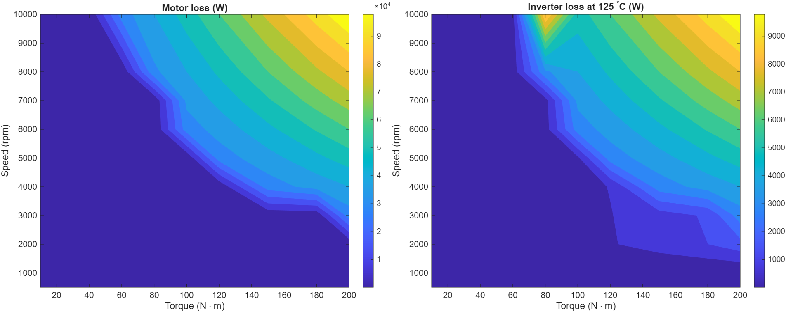

Generate Motor and Inverter Loss Maps
To model a permanent magnet synchronous motor (PMSM) inside a fast system-level thermal simulation, you replace the detailed machine with a loss map. This workflow generates that map from an FEM-characterized PMSM under field-oriented control.
It sweeps the torque, speed, and inverter junction-temperature vectors, running the detailed FOC model at each operating point to separate motor (copper and iron) losses from inverter (IGBT and diode) losses. The resulting lookup tables feed the thermal-capable MotorDrive component fidelities.
Quick Setup
- Open the workflow Live ScriptOpen Live Script
Open
generateDULossMap.mlxto generate motor and inverter loss maps over the speed, torque, and temperature grid. - Load PMSM parametersOpen PMSM parameters
Load
PMSMSystemParams. UsegetPMSMParamsfor custom MotorCAD FEM data orPMSMsaturationLossMap.matfor the maintained machine. - Sweep the operating pointsOpen loss-table extraction
Run
getLossTableto calculate copper, iron, IGBT, and diode losses across the operating envelope. - Run and export the loss tablesOpen detailed PMSM test bench
Verify the torque–speed envelope, axes, and units. With overwrite enabled, the motor and inverter loss maps are saved in
Script_Data.
Key Models and Components
| Model or component | Role | Reference |
|---|---|---|
| Detailed FOC PMSM model | Calculates motor and inverter losses at each operating point. | Open model |
| Motor Drive | Consumes the generated motor and inverter loss maps in thermal simulations. | View component |
Expected Results

The workflow produces these result types:
- Motor copper and iron loss maps
- IGBT and diode loss maps
- Efficiency and lookup tables for MotorDrive fidelities
Supporting Files
| Purpose | Artifact | Action |
|---|---|---|
| Main workflow | generateDULossMap.mlx | Open Live Script |
| Detailed PMSM test bench | PMSMdetailTestbench.slx | Open model |
| PMSM parameters | PMSMSystemParams.m | Open file |
| Loss-table extraction | getLossTable.m | Open file |
Checks Before Using Results
- Verify the sweep covers the intended torque-speed envelope.
- Reject operating points that do not converge.
- Check map axes and units before using the tables in MotorDrive models.